I am Zhicheng LIANG (梁志成), a Ph.D. candidate in Computer Information in Engineering at The Chinese University of Hong Kong, Shenzhen, supervised by Prof. Fangxin Wang.
My recent work focuses on spatial intelligence, including large-scale 3D foundation models, 3D & 4D generation, reconstruction and streaming. I am also a research intern at Alibaba's Meta Team, working on 3D foundation model pre-training and post-training with video world-model priors.
Before my Ph.D., I received an M.Sc. in Data Science with distinction from City University of Hong Kong, supervised by Prof. Yu Yang.
Featured Publications
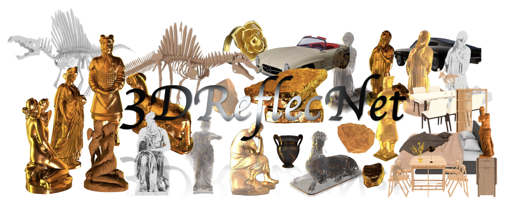
3DReflecNet: A Large-Scale Dataset for 3D Reconstruction of Reflective, Transparent, and Low-Texture Objects
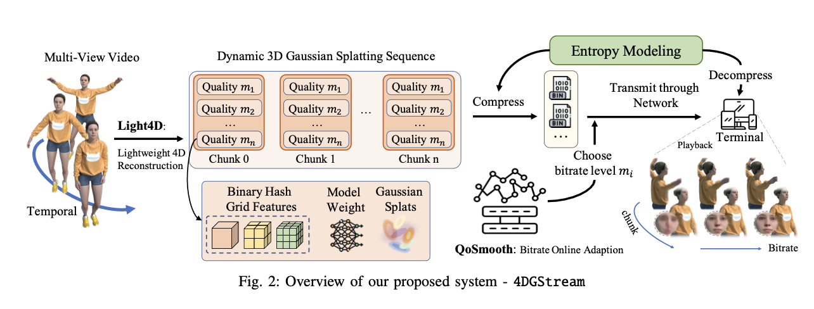
4DGStream: Variable Bitrate Dynamic Gaussian Splatting Streaming
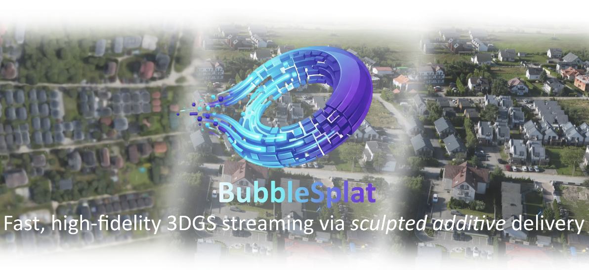
BubbleSplat: Forget Swollen LODs with Low-Redundancy, Inflation-Driven 3D Gaussian Streaming
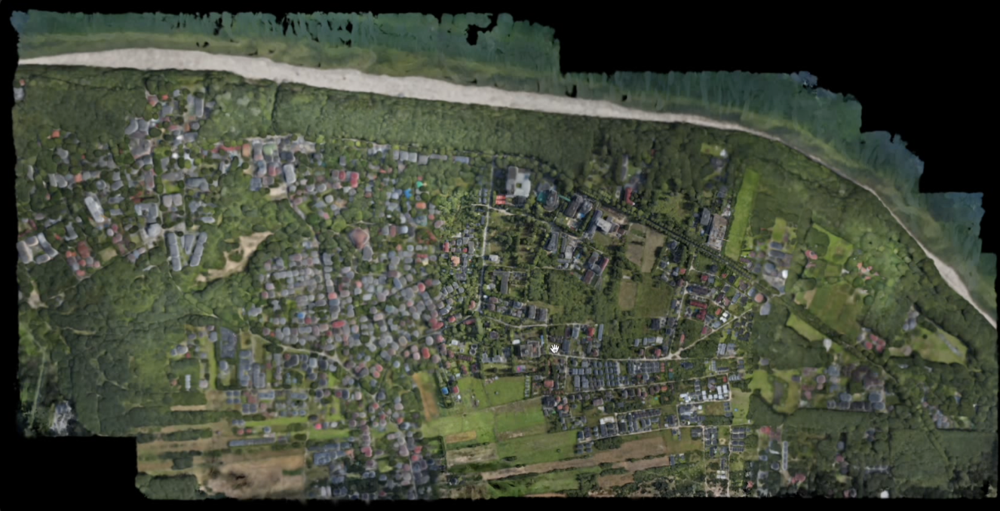
MobileSplat: Real-Time Streaming and Rendering of City-Scale 3D Scenes for Mobile Platforms
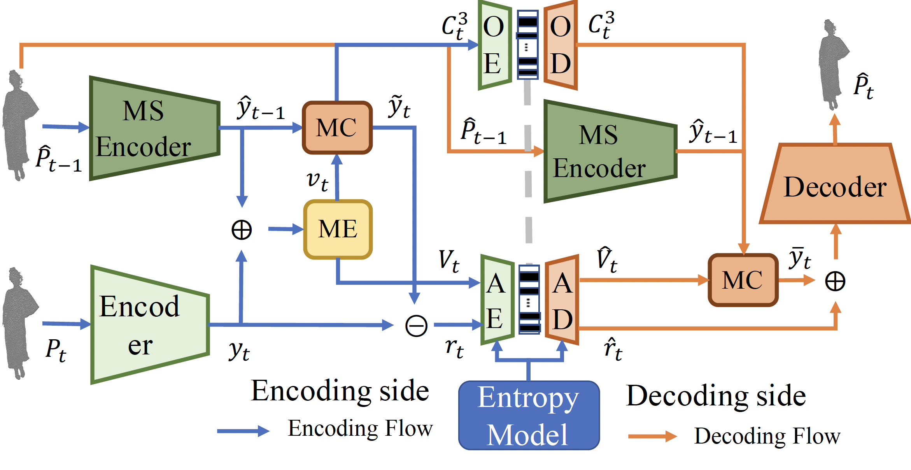
Fumos: Neural Compression and Progressive Refinement for Continuous Point Cloud Video Streaming
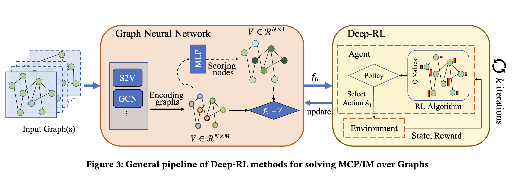
A Benchmark Study of Deep-RL Methods for Maximum Coverage Problems over Graphs
Full Publications
Google Scholar- 3DReflecNet: A Large-Scale Dataset for 3D Reconstruction of Reflective, Transparent, and Low-Texture Objects Zhicheng Liang, H. Yu, B. Li, D. Zhang, Z. Cao, T. Gong, J. Liu, S. Cui, F. Wang. CVPR 2026.
- 4DGStream: Variable Bitrate Dynamic Gaussian Splatting Streaming Zhicheng Liang, D. Zhang, L. Shen, M. Zhang, J. Zhang, B. Ju, M. Dasari, F. Wang, J. Liu. IEEE TMM, 2026.
- BubbleSplat: Forget Swollen LODs with Low-Redundancy, Inflation-Driven 3D Gaussian Streaming Zhicheng Liang, B. Li, Z. Cao, D. Zhang, W. Sun, Z. Gong, F. Wang. ACM MM, 2026.
- MobileSplat: Real-Time Streaming and Rendering of City-Scale 3D Scenes for Mobile Platforms Zhicheng Liang, J. Liu, D. Zhang, B. Li, Z. Cao, Y. Liu, F. Qian, F. Wang. IEEE TMC, 2026.
- FedShieldLLM: Measurement, Detection and Protection of Privacy Leakage in Federated LLMs W. Sun, X. Wang, Zhicheng Liang, J. Chen, W. Lan, Y. Chen, F. Wang. IEEE TMC, 2026.
- Efficient and Privacy-Preserving Federated Knowledge Learning for Distributed LLM W. Sun, X. Wang, Zhicheng Liang, T. Gong, W. Lan, Y. Chen, H. Li, F. Wang. IEEE TMC, 2026.
- Maniflat3D: Learning 3D Geometry Through Planar Representations from Multi-Layer Unwrapping Z. Cao, D. Zhang, Z. Liu, Zhicheng Liang, F. Wang. AAAI, 2026.
- 3DGStreaming: Spatial-Heterogeneity-Aware 3-D Gaussian Splatting Compression and Streaming D. Zhang, Zhicheng Liang, Z. Cao, L. Wei, D. Wang, F. Wang. IEEE IoT-J, 2025.
- SRBF-Gaussian: Streaming-Optimized 3D Gaussian Splatting D. Zhang, Zhicheng Liang, Z. Cao, D. Wang, F. Wang. IEEE VR, 2025.
- Live High-Fidelity Semantic Communication via Cross-Modal Fusion for Volumetric Video T. Gong, Z. Cao, Zhicheng Liang, D. Zhang, F. Wang, S. Cui. IEEE JSAC, 2025.
- Uncovering Hidden Social Connections in Lawsuit Activities by Learning Over Knowledge Graph Zhicheng Liang, Y. Lian, C. Ding, Y. Yang. IEEE TCSS, 2025.
- Fumos: Neural Compression and Progressive Refinement for Continuous Point Cloud Video Streaming Zhicheng Liang, J. Liu, M. Dasari, F. Wang. IEEE TVCG, 2024.
- A Benchmark Study of Deep-RL Methods for Maximum Coverage Problems over Graphs Zhicheng Liang, Y. Yang, X. Ke, X. Xiao, Y. Gao. PVLDB, 2024.
13 publications, synced from Google Scholar in September 2026.
Featured Projects
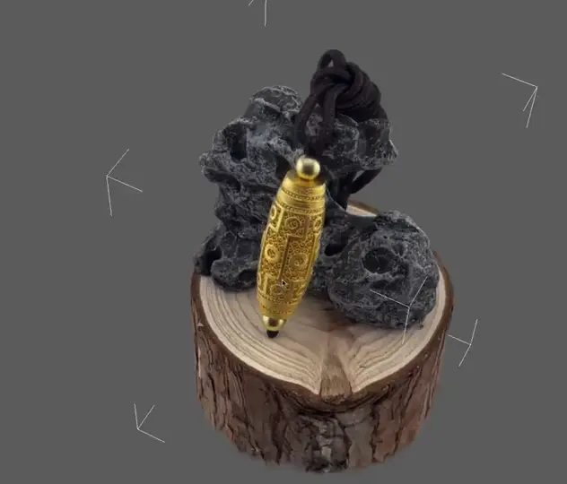
3D Reconstruction of Objects with Challenging Materials
Shape and appearance reconstruction of a reflective object.
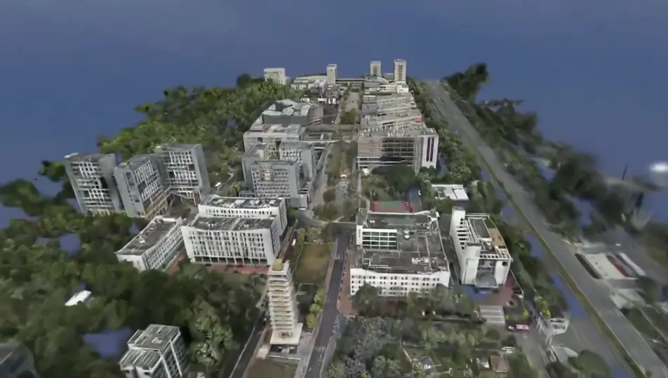
Large-Scale 3D Reconstruction: Campus
Campus-scale reconstruction with free-viewpoint navigation.
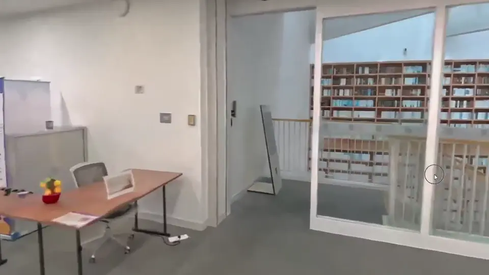
3D Reconstruction of Complex Indoor Scenes: Library
Reconstructing a complex indoor scene.
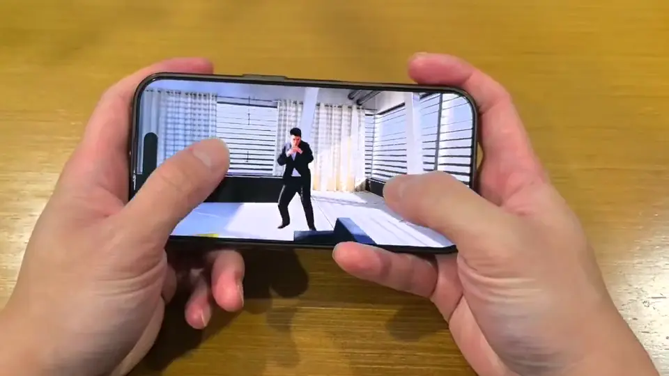
Efficient 4DGS Representation and Real-Time Codec
4D Gaussian compression and real-time playback on mobile.
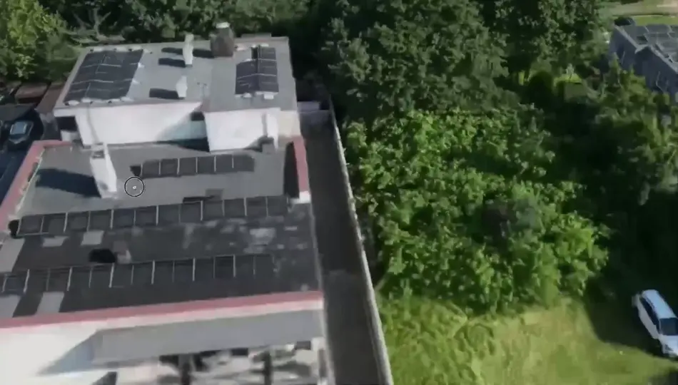
Scalable 3D Scene Streaming and Rendering
Streaming and rendering a campus-scale 3D scene during navigation.
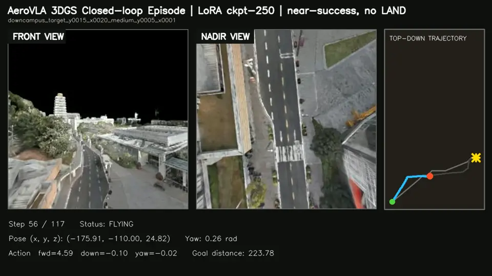
Real-to-Sim Worlds for VLA Training
Reconstructed environments for closed-loop vision-language-action training.
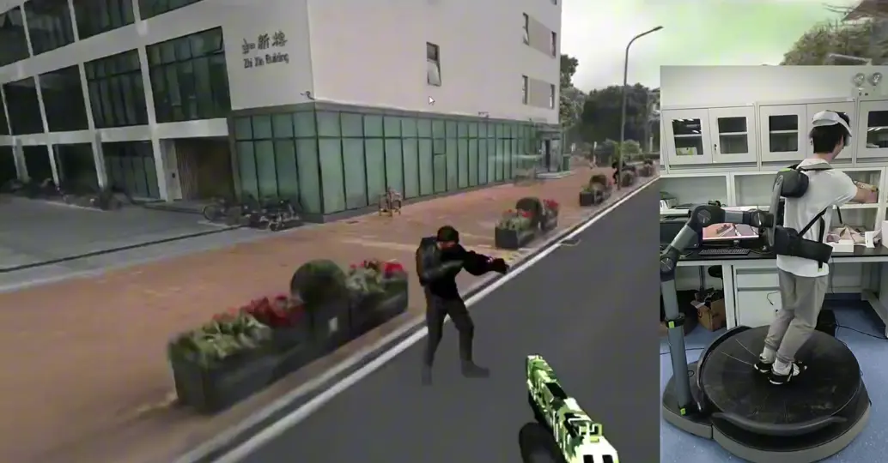
Immersive VR Experience in a 3DGS-Reconstructed Campus
Interactive VR navigation in a campus reconstructed with 3D Gaussian Splatting.